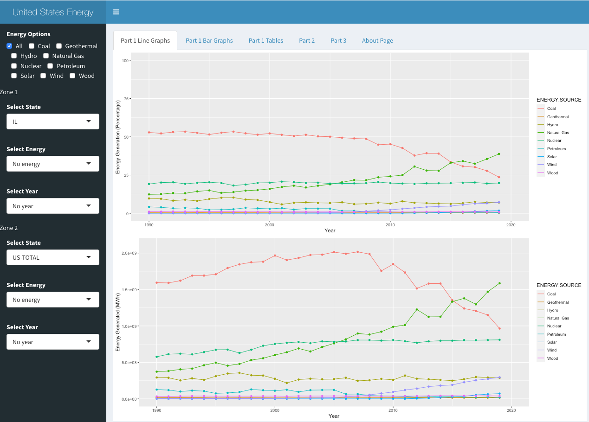
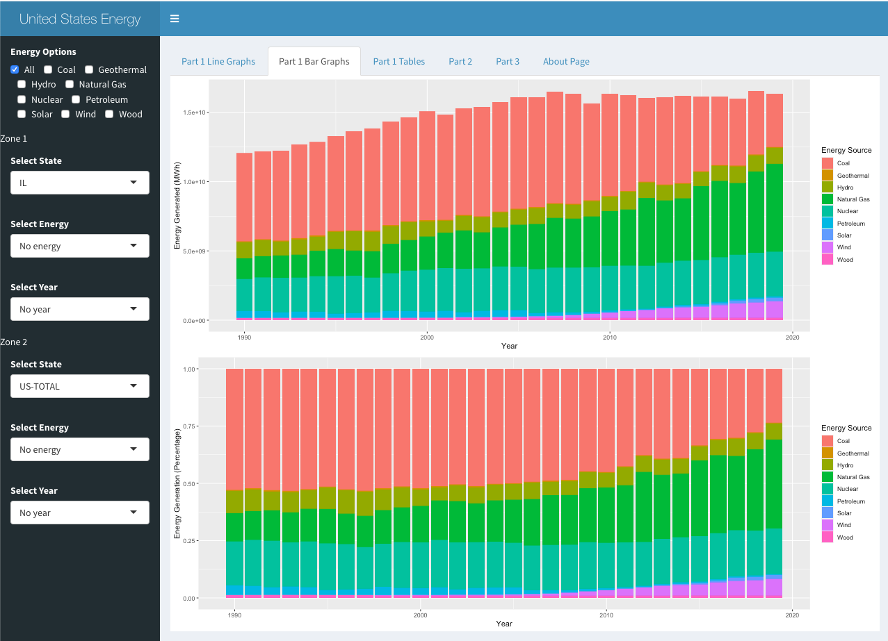
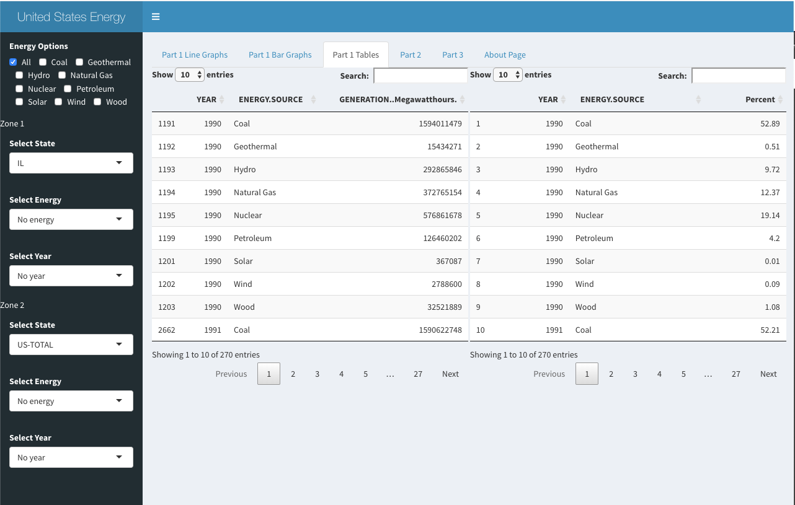
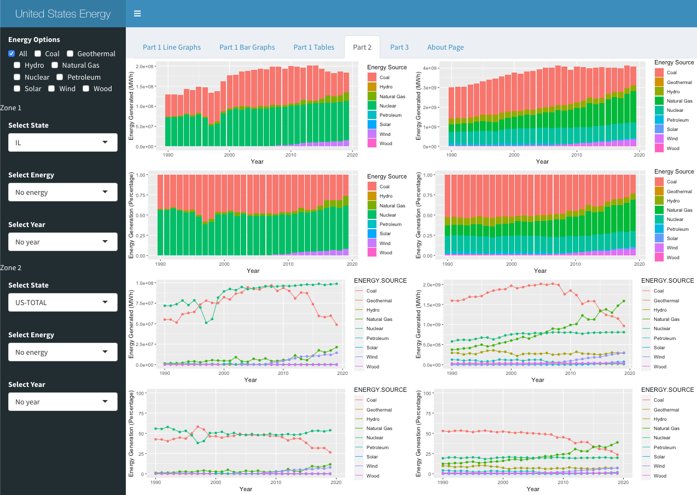
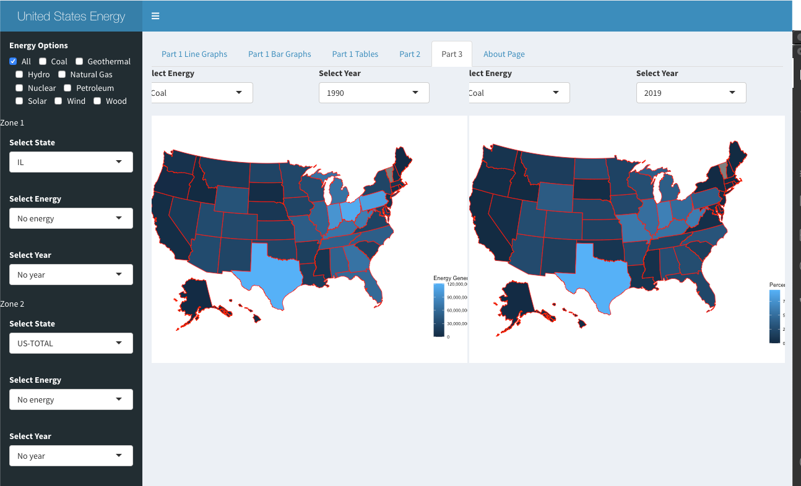

Projects
All of my Projects created through R
Energy Generation in the United States from 1990 - 2019
Click here to go to the website!
Click here to go to Github!
Introduction
There are many different sources of generating energy in the United States. Most of the popular ones are coal, solar and wind energy. But there are many more such as wood, nuclear, petroleum, and geothermal. All of that data is availabe online so after some pre-processing you can see how much a specific energy source was generated throughout the years 1990 to 2019. The data is available in many different formats. Some of the notable features are:
- Line Graphs: The initial line graphs show you the amount of generated energy for each of the energy sources from 1990 to 2019. Along with that, you're able to see what percentage each energy source occupied for a specific year. If you'd like to only see specific energy sources, the checkboxes on the side assist with that. 
- Bar Graphs: The bar graphs have a similar functionality like the line graphs but they are obivously represented different from a visual perspective. On the top, you will see a stacked bar chart with the total energy used for each source in MWh. On the bottom, you can see what percentage each source took overall in a specific year from 1990 - 2019. 
- Tables: Through these tables, you will be able to go through all of the numbers for each state. And similar to the features in the line graphs, if you would like to compare different energy source numbers and percentages throughout the year, just select the specific ones from the check box on the side! 
- Comparision between States: There are a lot of charts in this section but it allows you to to compare the data between the states! And if you would like to see the exact number for a State, Energy Source, and Year, select them from the menu for the speciifc zone and it will show! 
- Maps: Finally in the last section, you are able to again manipulate two different zones. In each of the zones you are able to select a specific energy source and year. Once that is done, you can see the production of that energy source on the left-most map. The second map shows you the percentages for the speciifc combination of energy and year you desire. 
Information about Data
The csv file that was used can be found here
There were multiple manipulations done to the file so that the specified data can be shown. For the pre-processing I had to initally convert the Energy Generated numbers from strings to numbers. Then, there were a couple missing identifiers which had to be found and then removed. After that, I made sure to convert a couple of the columns to categorical vallues. This helps in the graphing as every single one of them can be grouped together. I erased any of the Energy Generated numbers that were negative, deleted some of the smaller energy sources and renamed the energy sources to be a bit more compact.
Interesting Data Found
I've found a couple things that may be of interest and worth researching a bit more.
- Usage of Geothermal energy has been very low in the past 3 decades. Only a few States adopted it 1990 and since then only few have been added since then. One interesting thing to note is that all of the states are in the west coast. What may be the reason for that?
- Another thing to note is that almost a 100% of Kentucky's energy generation comes from coal! That comes as a surprise since different states adjusted as time passed on and some even had other energy sources being used more than coal. But Kentucky seems to be dead set on that.
- In contrast to Kentucky, if we look at California's energy usage it is basically no coal! This is very surprising as I thought it would have maybe steadily decreased. But no, even going back to 1990, the usage of coal was little to practically none.
- If we look at the changes in the usage of wind from 1990 to 2019, there is a huge one! In 1990, there were only a couple states that used it (5 to be exact). But now in 2019, it seems like approximately 3/4s of the country takes advantage of it! Even if it may be in its infancy stages, it is nice to see different sources being taken advantage of.
- © Untitled
- Design: HTML5 UP